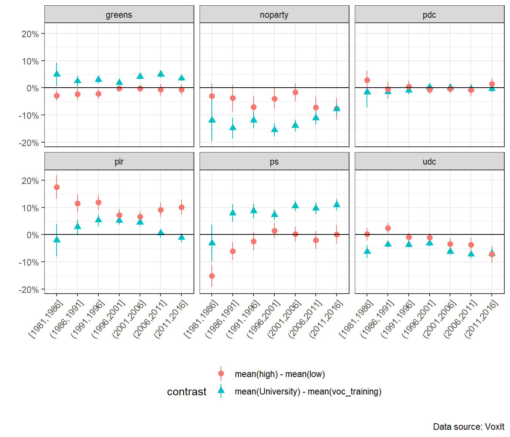

Master Thesis Presentation
The Political Economy of Institutional Change and Social Blocs in Switzerland: a Neorealist Approach
Celâl Güney
Motivation
Explain and analyze institutional change using Amable and Palombarini’s neorealist approach (Amable and Palombarini 2005, 2008, 2023)
Switzerland as a case study
Why Switzerland ?
- Switzerland is often ignored in the theories of political economy/comparative capitalism
- Switzerland allows to study stability instead of crisis (France, Italy)
- Switzerland is often considered as a very stable and efficient country


Switzerland and comparative capitalism
- Coordinated market economy (Hall and Soskice 2001)
- Organized capitalism (Charles and Vallet 2024)
- Hybrid model (Trampusch and Mach 2011)

Institutional change in Switzerland
Research question
What social basis for a neoliberal transformation of the Swiss model ?
Research in three parts
- Short history of the Swiss social blocs since 1848, based on the literature
- Then, two empirical analyses based on two different approach to social blocs
- The bi-dimensional “political compass” approach
- Implicit definition of social blocs, which are pre-defined groups based on income and education levels (Piketty 2019) or social classes (Oesch and Rennwald 2018)
- A multidimensional and bottom-up clustering approach, using latent class analysis (Amable 2021)
Traditional social blocs
| Social Bloc | Socio-political Groups | Policy Preferences |
|---|---|---|
| Liberal-conservative bloc | Large industrial, export-oriented and competitive firms, skilled workers and managers Medium and small domestic oriented firms, farmers |
Free-trade, low employment and social protection, low tax level Public transfers, protection from international competition |
| Left bloc | Socio-cultural professionals, workers from the public sector Workers from the private sector |
State intervention, social protection, increase in real wage Real wage increase, social & employment protection, protection from international competition |
Political compass approach
Political compass approach - WPID
Hypotheses
Brahmin left versus merchant right hypotheses
- BvsM1. The support for the left and left-wing parties should be negatively associated with education and income levels in the first time periods. The negative association with education should then decrease and become positive over time.
- BvsM2. The support for the right and right-wing parties should be positively associated with education and income in the first time periods and the positive association with education should decrease over time.
Bourgeois bloc hypotheses
- BB1. The support for redistribution and state intervention should decrease with education and income. Support for equal rights between Swiss citizen and foreigners should increase with education and income.
- BB2. Support for right-wing parties and the right should increase with both income and education levels.
Results



Latent class analysis
8 questions as indicators to endogenously infer clusters (socio-political groups)
3 step approach to explore the relationships between clusters and party support/ political leaning
Selects data for 1999, a turning point in Swiss politics

The 12 clusters model
Aggregation into social blocs
Aggregation into blocs
Left bloc: clusters 2 and 8 are composed by wealthy and well-educated individuals, only cluster 12 is composed by popular elements. Potential targets of the left bloc, clusters 4 and 1, are rather composed by middle/lower-middle classes.
Liberal conservative bloc: clusters 3 and 7 are the least wealthy and educated; 9 and 10 among the most wealthy and educated.
Discussion of the results
Regression analysis:
Results validate brahmin left vs merchant right hypothesis more than the WPID’s own results
A few exceptions: difference between second highest and lowest income groups for left leaning
Analyses of the WPID extended to abstention and policy preferences
12 clusters model for 1999:
Dominant liberal conservative bloc, which is nonetheless divided over European integration and some economic issues (high income taxation)
The predominance of anti-EU and popular groups in the liberal conservative bloc could explain the failure of a neoliberal/bourgeois bloc strategy and the slowdown of the reforms after 2003.
Left bloc: incentives to attract parts of cluster 1 and 4, which are more moderate
Limits and further research
Five levels for a theoretical framework for institutional change (Amable and Palombarini 2008):
- Ideology
- Demands of social actors
- Political mediation
- Identification of social groups and of which benefit/loose from economic dynamics and public policy
- Institutions
Limits and further research
My master’s thesis is only a first step for a neorealist analysis of Switzerland’s institutional change. There is still a lot to be done.
In further work, I envisage to do the following:
- Better assess Switzerland’s political stability
- Conduct LCA for more recent periods (for instance 2019)
- Other periods such as 2003 or 2007 could also be interesting
- Run a more complex and wide regression analysis
- Multilevel models & including 2016-2020 data
- Take ideology more into account
- Explore institutional and economic dynamics
- Identification of Switzerland’s demand regime from a post-Keynesian perspective
- Better explain how social groups’ interests are protected/discarded by economic dynamics and public policy
References
Amable, Bruno. 2021. “In Search of the Bloc Bourgeois.” Revue de La Régulation. Capitalisme, Institutions, Pouvoirs, no. 31 (August). https://doi.org/10.4000/regulation.20350.
Amable, Bruno, and Stefano Palombarini. 2005. L’économie Politique n’est Pas Une Science Morale. Raisons d’Agir. Paris.
———. 2008. “A Neorealist Approach to Institutional Change and the Diversity of Capitalism.” Socio-Economic Review 7 (1): 123–43. https://doi.org/10.1093/ser/mwn018.
———. 2023. “Multidimensional Social Conflict and Institutional Change.” New Political Economy, May, 1–16. https://doi.org/10.1080/13563467.2023.2215701.
Charles, Léo, and Guillaume Vallet. 2024. “Fast and Curious: ‘The Swiss Development Puzzle.’ The Institutional Roots of the Success of Industrialization.” Review of Political Economy 0 (0): 1–27. https://doi.org/10.1080/09538259.2023.2298747.
Durrer de la Sota, Carmen, Amory Gethin, and Clara Martinez-Toledano. 2021. “Party System Transformation and the Structure of Political Cleavages in Austria, Belgium, the Netherlands and Switzerland, 1967-2019.” World Inequality Lab – Working Paper, no. 2021. https://wid.world/wp-content/uploads/2021/03/WorldInequalityLab_WP2021_08_PoliticalCleavages_AustriaBelgiumNLSwitzerland.pdf.
Fill, Anna. 2019. The Political Economy of de-Liberalization: A Comparative Study on Austria, Germany and Switzerland. Contributions to Political Science. Cham: Springer International Publishing. https://doi.org/10.1007/978-3-030-01066-9.
Gethin, Amory, Clara Martínez-Toledano, and Thomas Piketty. 2022. “Brahmin Left Versus Merchant Right: Changing Political Cleavages in 21 Western Democracies, 1948–2020*.” The Quarterly Journal of Economics 137 (1): 1–48. https://doi.org/10.1093/qje/qjab036.
Hall, Peter A., and David Soskice. 2001. Varieties of Capitalism: The Institutional Foundations of Comparative Advantage. Oxford University Press.
Oesch, Daniel, and Line Rennwald. 2018. “Electoral Competition in Europe’s New Tripolar Political Space: Class Voting for the Left, Centre-Right and Radical Right.” European Journal of Political Research 57 (4): 783–807. https://doi.org/10.1111/1475-6765.12259.
Piketty, Thomas. 2019. Capital Et Idéologie. Le Seuil.
Sciarini, Pascal. 2023. Politique Suisse - Institutions, Acteurs, Processus. Lausanne: Presses polytechniques et universitaires romandes. https://www.epflpress.org/produit/1421/9782889155279/politique-suisse.
Trampusch, Christine, and André Mach. 2011. Switzerland in Europe: Continuity and Change in the Swiss Political Economy. Taylor & Francis.